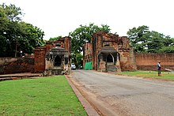
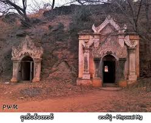

အဆောက်အအုံအမှတ် = ၂၁၇၁/၁၄၆၆
သရပါတံခါးကို ခရစ် (၉)ရာစုတွင် ပျဉ်ပြားမင်း အေဒီ (၈၄၆-၈၇၈)တွင် တည်ဆောက်ခဲ့သည်။ ပျဉ်ပြားမင်းသည် ခရစ်(၈၄၉)တွင် ပုဂံမြို့ကို တည်ရာ၌ ပုဂံကျုံးမြို့ရိုး လေးမျက်နှာ ပတ်လည် တွင် တံခါး(၁၂)ရပ် ပါရှိခဲ့သည်။ ထိုတံခါး (၁၂)ရပ် အနက် အရှေ့မျက်နှာ အလယ်ဗဟိုတံခါး ဖြစ်သည့် သရပါတံခါး တစ်ခုသာ ထင်ထင်ရှားရှား ကျန်ရစ်တော့သည်။ သရပါ ဟူသော အမည်သည် မြားကို ဆီးကာသော တံခါး ဟု အဓိပ္ပာယ်ရသည်။ သရပါ တံခါး၏ ဘေးတစ်ဖက်တစ်ချက်တွင် မဟာဂီရိ နတ်မောင်နှမ (လက်ဝဲမောင်တော် နတ်ရုပ်၊ လက်ယာ နှမတော်နတ်ရုပ်) တို့၏ နတ်ကွန်း များရှိသည်။
 ပုဂံရှေးဟောင်းသုတေသနပြတိုက် သည် မြန်မာနိုင်ငံ၊ မန္တလေးတိုင်းဒေသကြီး၊ ပုဂံညောင်ဦးမြို့နယ်၊ ပုဂံမြို့ဟောင်းတွင် တည်ရှိသည်။ ပုဂံရှေးဟောင်းသုတေသနပြတိုက်ကို တနင်္ဂနွေ၊ တနင်္လာနှင့် ပြန်တမ်းဝင်ရုံးပိတ်ရက်များမှ လွဲ၍ နေ့စဉ် နံနက် ကိုးနာရီမှ ညနေ လေးနာရီခွဲအချိန်ထိ ဖွင့်လှစ်ပြသလျက်ရှိသည်။
ပုဂံရှေးဟောင်းသုတေသနပြတိုက် သည် မြန်မာနိုင်ငံ၊ မန္တလေးတိုင်းဒေသကြီး၊ ပုဂံညောင်ဦးမြို့နယ်၊ ပုဂံမြို့ဟောင်းတွင် တည်ရှိသည်။ ပုဂံရှေးဟောင်းသုတေသနပြတိုက်ကို တနင်္ဂနွေ၊ တနင်္လာနှင့် ပြန်တမ်းဝင်ရုံးပိတ်ရက်များမှ လွဲ၍ နေ့စဉ် နံနက် ကိုးနာရီမှ ညနေ လေးနာရီခွဲအချိန်ထိ ဖွင့်လှစ်ပြသလျက်ရှိသည်။
 အေဒီ ၁၁၁၃ ခုနှစ် က ကျောက်တုံးပေါ်တွင် ရေးထိုးခဲ့သော မြစေတီကျောက်စာ သည် မြစေတီ ခြေရင်းနားတွင် တွေ့ရှိရသည်။[၁] ရာဇကုမာရ် ရေးထိုးခဲ့သောကြောင့် ရာဇကုမာရ်ကျောက်စာဟုလည်းခေါ်သည်။ အလားတူ ကျောက်စာတစ်ခုကိုလည်း မြစေတီအနီးရှိ အဆောက်အဦးတွင်လည်း တွေ့ရသည်။ ၎င်းကျောက်စာ နှစ်ခုစလုံးတွင် မျက်နှာလေးဖက်ပါပြီး ပါဠိ၊ မွန်၊ မြန်မာ နှင့် ပျူ ဘာသာများတို့ဖြင့် ရေးသားထားသည်။ မြစေတီ ကျောက်စာတိုင်သည် အမြင့် ၅၅ လက်မ ရှိ၍ လေးဖက်လုံးတွင် အကျယ် ၁၄ လက်မရှိသည်။ မြစေတီကျောက်စာအရ ရာဇကုမာရ်မင်းသားသည် ကျန်စစ်သားမင်းနှင့် ကြင်ရာတော် သမ္ဘူလ၏သားဖြစ်သည်ဟု သိရသည်။ ကျန်စစ်သား မင်းဖြစ်သောအခါ သမ္ဘူလနှင့်သား (ရာဇကုမာရ်) မြို့တော်သို့ ရောက်လာသည်။ သို့သော် သားအရင်းဖြစ်သည့် ရာဇကုမာရ်အား ထီးနန်းအရိုက်အရာမပေးနိုင်ပဲ သမီးဖြစ်သူ ရွှေအိမ်စည် နှင့် မွန်ဘုရင် မနူဟာ၏မြေးတော်သူတို့မှ ဖွားမြင်သည့် မြေးတော်အလောင်းစည်သူ အားနန်းလျာထားပြီးဖြစ်သဖြင့် ရာဇကုမာရ်အား ဓညဝတီတောင်စဉ် ၇ ခရိုင်အားပေးခြင်းဖြင့် နှစ်သိမ့်ခဲ့သည်။ ရာဇကုမာရ်ကလည်း ကျေးဇူးသိတတ်သောအားဖြင့် ကျန်စစ်သား နာမကျန်းဖြစ်ချိန်တွင် မိမိပိုင်ရွှေ၊ငွေ ဥစ္စာများဖြင့် ဗုဒ္ဓရုပ်ပွားတော်များ သွန်းလုပ်ပူဇော်ပေးခဲ့သည်။ ထိုသို့သော ကုသိုလ်အကြောင်းကို မြစေတီကျောက်စာအဖြစ် ရေးထိုးခဲ့ခြင်းဖြစ်သည်။ ကျောက်စာတွင် ဆုတောင်းလွှာ နှင့် ကျိန်စာများ ပါရှိသည်။
အေဒီ ၁၁၁၃ ခုနှစ် က ကျောက်တုံးပေါ်တွင် ရေးထိုးခဲ့သော မြစေတီကျောက်စာ သည် မြစေတီ ခြေရင်းနားတွင် တွေ့ရှိရသည်။[၁] ရာဇကုမာရ် ရေးထိုးခဲ့သောကြောင့် ရာဇကုမာရ်ကျောက်စာဟုလည်းခေါ်သည်။ အလားတူ ကျောက်စာတစ်ခုကိုလည်း မြစေတီအနီးရှိ အဆောက်အဦးတွင်လည်း တွေ့ရသည်။ ၎င်းကျောက်စာ နှစ်ခုစလုံးတွင် မျက်နှာလေးဖက်ပါပြီး ပါဠိ၊ မွန်၊ မြန်မာ နှင့် ပျူ ဘာသာများတို့ဖြင့် ရေးသားထားသည်။ မြစေတီ ကျောက်စာတိုင်သည် အမြင့် ၅၅ လက်မ ရှိ၍ လေးဖက်လုံးတွင် အကျယ် ၁၄ လက်မရှိသည်။ မြစေတီကျောက်စာအရ ရာဇကုမာရ်မင်းသားသည် ကျန်စစ်သားမင်းနှင့် ကြင်ရာတော် သမ္ဘူလ၏သားဖြစ်သည်ဟု သိရသည်။ ကျန်စစ်သား မင်းဖြစ်သောအခါ သမ္ဘူလနှင့်သား (ရာဇကုမာရ်) မြို့တော်သို့ ရောက်လာသည်။ သို့သော် သားအရင်းဖြစ်သည့် ရာဇကုမာရ်အား ထီးနန်းအရိုက်အရာမပေးနိုင်ပဲ သမီးဖြစ်သူ ရွှေအိမ်စည် နှင့် မွန်ဘုရင် မနူဟာ၏မြေးတော်သူတို့မှ ဖွားမြင်သည့် မြေးတော်အလောင်းစည်သူ အားနန်းလျာထားပြီးဖြစ်သဖြင့် ရာဇကုမာရ်အား ဓညဝတီတောင်စဉ် ၇ ခရိုင်အားပေးခြင်းဖြင့် နှစ်သိမ့်ခဲ့သည်။ ရာဇကုမာရ်ကလည်း ကျေးဇူးသိတတ်သောအားဖြင့် ကျန်စစ်သား နာမကျန်းဖြစ်ချိန်တွင် မိမိပိုင်ရွှေ၊ငွေ ဥစ္စာများဖြင့် ဗုဒ္ဓရုပ်ပွားတော်များ သွန်းလုပ်ပူဇော်ပေးခဲ့သည်။ ထိုသို့သော ကုသိုလ်အကြောင်းကို မြစေတီကျောက်စာအဖြစ် ရေးထိုးခဲ့ခြင်းဖြစ်သည်။ ကျောက်စာတွင် ဆုတောင်းလွှာ နှင့် ကျိန်စာများ ပါရှိသည်။

ငှက်ပစ်တောင်သည် မြန်မာနိုင်ငံ၊ မန္တလေးတိုင်းဒေသကြီး၊ ညောင်ဦးမြို့၏ အရှေ့တောင်ဘက် မိုင်ဝက်ခန့်တွင် ရှိသည်။ ဆပ္ပဒဘုရား အလွန် အရှေ့ဘက်လမ်းချိုး၌ရှိသော ဂေါတမရုပ်ပွားတော်ကို ကျော်သွားသည်နှင့် ငှက်ပစ်တောင်ကို တွေ့ရသည်။ တောင်အမည်တပ်ခေါ်သော်လည်း ပုဂံတစ်ဝိုက်၌ရှိသော တန့်ကြည့်တောင်၊ တုရင်တောင်တို့လောက်မမြင့်ဘဲ ပေ နှစ်ဆယ်၊ သုံးဆယ်မျှလောက်သာရှိသော တောင်ကုန်းမို့မို့မျှသာ ဖြစ်သည်။